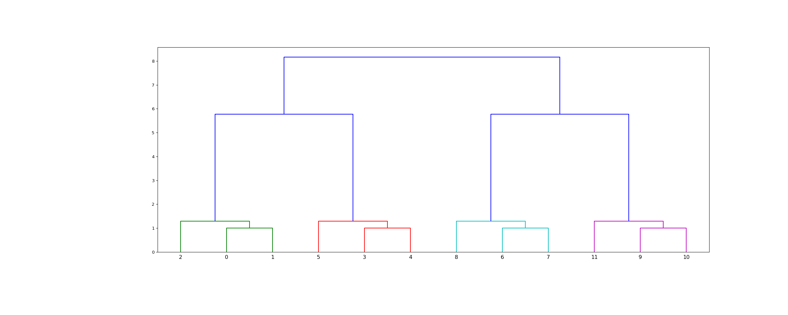

scipy.cluster.hierarchy.leaves_list¶
-
scipy.cluster.hierarchy.leaves_list(Z)[source]¶ Return a list of leaf node ids.
The return corresponds to the observation vector index as it appears in the tree from left to right. Z is a linkage matrix.
- Parameters
- Zndarray
The hierarchical clustering encoded as a matrix. Z is a linkage matrix. See
linkagefor more information.
- Returns
- leaves_listndarray
The list of leaf node ids.
See also
dendrogramfor information about dendrogram structure.
Examples
>>> from scipy.cluster.hierarchy import ward, dendrogram, leaves_list >>> from scipy.spatial.distance import pdist >>> from matplotlib import pyplot as plt
>>> X = [[0, 0], [0, 1], [1, 0], ... [0, 4], [0, 3], [1, 4], ... [4, 0], [3, 0], [4, 1], ... [4, 4], [3, 4], [4, 3]]
>>> Z = ward(pdist(X))
The linkage matrix
Zrepresents a dendrogram, that is, a tree that encodes the structure of the clustering performed.scipy.cluster.hierarchy.leaves_listshows the mapping between indices in theXdataset and leaves in the dendrogram:>>> leaves_list(Z) array([ 2, 0, 1, 5, 3, 4, 8, 6, 7, 11, 9, 10], dtype=int32)
>>> fig = plt.figure(figsize=(25, 10)) >>> dn = dendrogram(Z) >>> plt.show()
